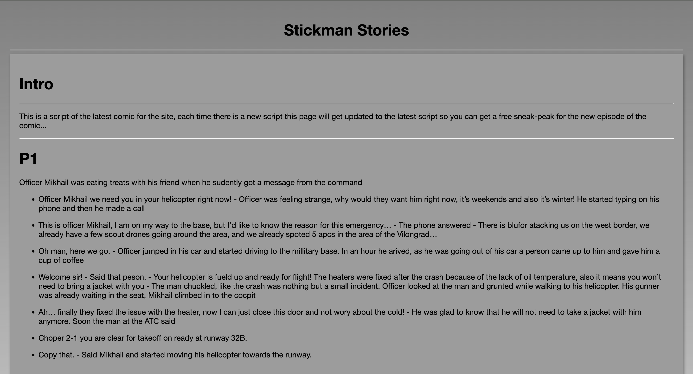

# Story
This page is a story of how the website was evolving from the beginning to the nower days. There is not that much data documented right now but I am quite sure that over time there would be more pictures to add and statements to make which will show how the website evolved over time and became what we now know as Stickman-Stories!
## 2024
In 2024, in the beginning, there was not that much to see as the website was still in development. And by that I meant there wasn't even a home page, or for other nerds like me "an Index page". It was very raw and the dev team was testing different combos of style while Danny (The author/ main dev) was starting to make the pages which were very raw in that time and looked very strange compared to the new look of the website. There was a lot of gradients and other stuff which now looks very old and annoying. For those who want to see the actual image here it is:

Let's just say it wasn't the pretiest of them all...
### The rest is still work in progress...